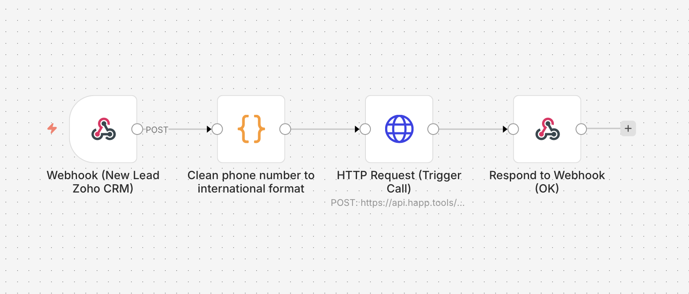
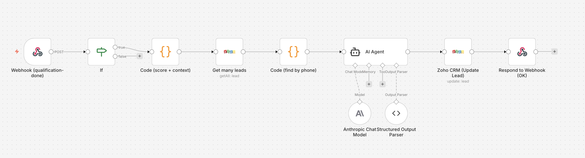
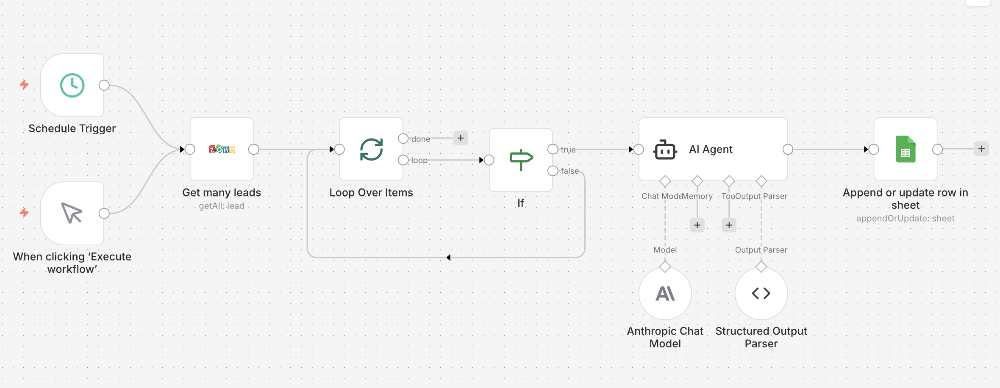
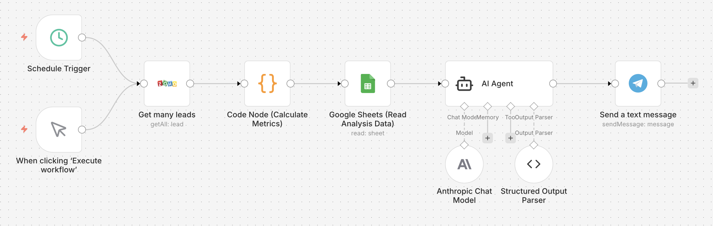
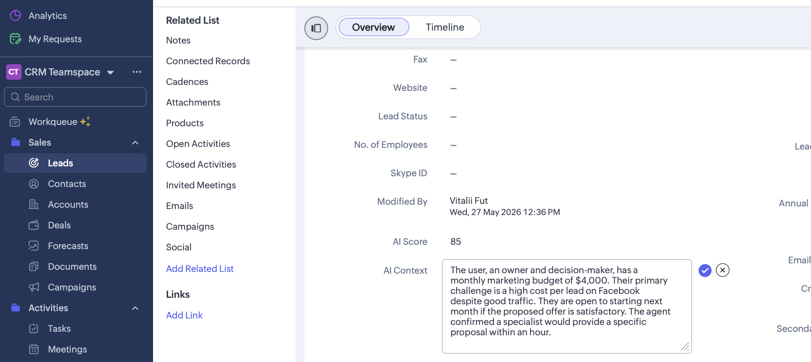
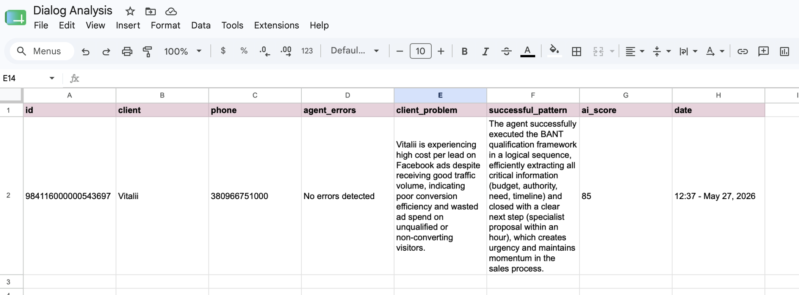
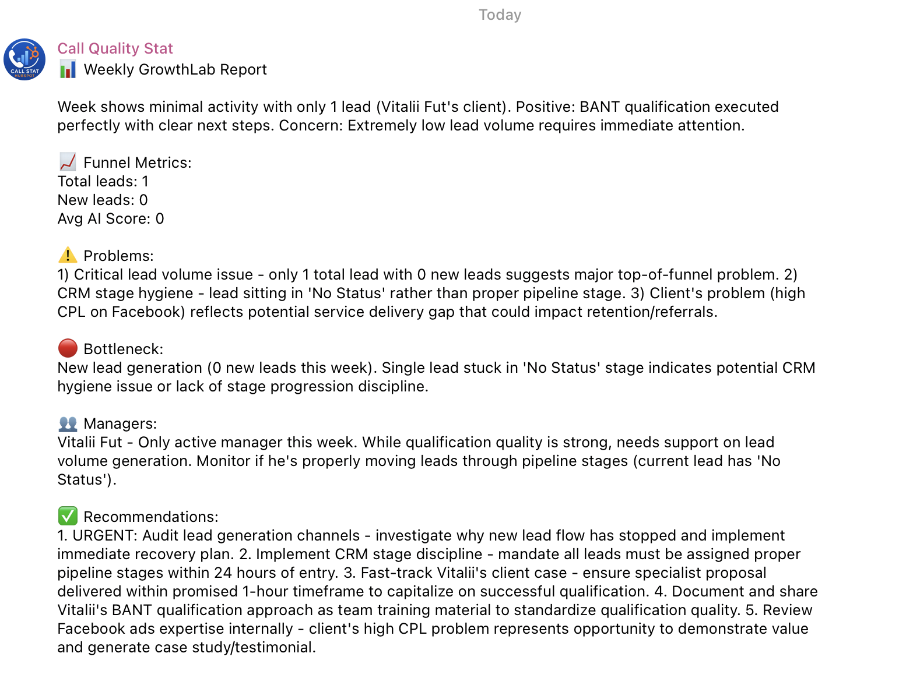
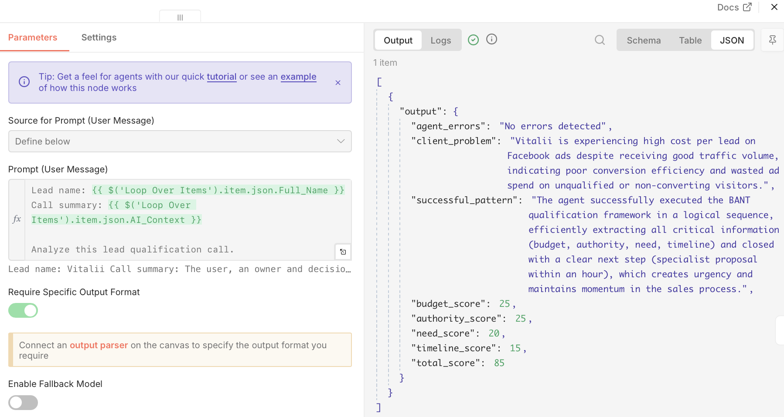

Automated Lead Qualification to CEO Report
Context
Company: GrowthLab - performance marketing agency
Industry: B2B Marketing Services
Target clients: E-commerce businesses with monthly revenue $50K-$500K
Average contract: $2,500/month for 6+ months
Team: 4 sales managers
Website traffic: 3,000 visitors/month → 100 leads/month
Problem
| Metric | Value | Issue |
|---|---|---|
| Qualification time | 20 min/lead | 75% were non-target clients |
| Lead response time | Hours/days | Leads go cold waiting for callback |
| Lead → Deal conversion | 5% | Too many unqualified leads in pipeline |
| Dialog analysis | None | No data on what works or fails |
| CEO reporting | Manual, monthly | Inaccurate and always delayed |
Sales managers were spending most of their time on leads that were never going to convert. No system existed to filter, score, or learn from conversations.
Solution
Built a 3-part AI voice sales ecosystem that works as a closed loop:
New Lead → Voice Agent Call → BANT Score → CRM
↓
Daily Dialog Analysis → Google Sheets
↓
Weekly CEO Report → TelegramWF1 - Voice Agent System (3 sub-workflows)
Automatically calls new leads within 2 minutes of form submission. AI agent Arabella qualifies leads using BANT framework, calculates score 0-100, and updates Zoho CRM with AI_Context + AI_Score + Session_ID.
WF2 - Dialog Analysis
Runs daily at 9:00. Analyzes every qualified call - identifies agent errors, client pain points, and successful patterns. Writes structured analysis to Google Sheets.
WF3 - CEO Report
Runs every Friday at 17:00. Combines CRM funnel metrics with dialog quality data. AI generates actionable weekly report sent directly to CEO via Telegram.
Process
1. Prompt Design
- BANT qualification prompt for voice format
- Scoring rules: Budget / Authority / Need / Timeline (0-25 each = 100 max)
- Dialog analysis prompt for quality review (English)
- CEO report prompt with Structured Output Parser
2. API Integration
- Happ.tools - Voice assistant + INIT + postcall webhooks
- Zoho CRM - Custom fields:
AI_Score,AI_Context,Session_ID - Anthropic Claude Sonnet - AI scoring and analysis
- Google Sheets - Dialog analysis database
- Telegram Bot - CEO notification channel
3. n8n Workflow Architecture
| Workflow | Trigger | Function |
|---|---|---|
| WF1a - Call Trigger | Zoho CRM Webhook | Cleans phone → triggers Happ.tools call |
| WF1b - Postcall Handler | Happ.tools Webhook | Scores call → updates CRM lead |
| WF1c - Lead Lookup | Happ.tools INIT | Returns lead name to voice agent |
| WF2 - Dialog Analysis | Schedule (daily 9:00) | Analyzes calls → writes to Google Sheets |
| WF3 - CEO Report | Schedule (Friday 17:00) | CRM + Sheets → AI report → Telegram |
4. BANT Scoring Rules
| Category | 25 pts | 20 pts | 15 pts | 10 pts | 0 pts |
|---|---|---|---|---|---|
| Budget | $3K+/mo | $2.5K | $1.5-2.5K | Below $1.5K | Not stated |
| Authority | Owner/CEO | CMO/Head | Influences | Gathers info | Unknown |
| Need | Urgent problem | Clear problem | Mild need | Vague desire | Not stated |
| Timeline | This week | This month | Next month | 2-3 months | Just looking |
Results
| Metric | Before | After | Change |
|---|---|---|---|
| Qualification time | 20 min/lead | 2 min/lead | ↓ 90% |
| Lead response time | Hours | 2 minutes | ↓ 98% |
| AI Score per lead | None | 0-100 automatic | New |
| CEO report frequency | Monthly manual | Weekly automated | 4x faster |
| Dialog analysis | None | Daily automatic | New |
| Scalability | 100 leads/4 managers | 1,000+ leads/same team | 10x |
Tech Stack
- n8n (self-hosted) - workflow automation engine
- Happ.tools - AI voice agent (GPT-4o, English voice Arabella)
- Anthropic Claude Sonnet - AI analysis, scoring, report generation
- Zoho CRM - lead management and custom fields
- Google Sheets - dialog analysis database
- Telegram Bot API - CEO weekly reporting
- ngrok - webhook tunneling
What Works
- Full end-to-end automation: lead form → voice call → CRM → analysis → CEO report
- Real BANT scoring based on actual conversation content
- Instant lead update after every call (AI_Score + AI_Context + Session_ID)
- Weekly CEO report with specific bottleneck identification and recommendations
- Loop-based dialog analysis processes all leads automatically
What Can Be Improved
- INIT personalization - lead name lookup before call (partially built, needs fix)
- WhatsApp integration - alternative notification channel for CEO
- Multi-language support - for non-English speaking leads
- A/B script testing - compare different qualification approaches
- Deduplication - handle Happ.tools double postcall webhook
Development Plan
- Fix WF1c INIT lead lookup → personalized greeting by name
- Add scoring threshold → auto-assign hot leads (score > 70) to senior managers
- Build re-qualification flow for cold leads (score < 40) with different script
- Integrate Google Calendar → automatic meeting booking for hot leads
- Add WhatsApp Business API notification as CEO report channel
Loom Screencast
Screenshots
WF1a canvas

WF1b canvas

WF2 canvas

WF3 canvas

Zoho CRM lead with AI Score

Google Sheets analysis

Telegram CEO report

Call transcript example with BANT score

GitHub Repository
🔗 https://github.com/vitaliiburorichnyi/growthlab-ai-sales-ecosystem